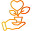

Education: Empowering minds, shaping futures!
At SP Seva Sansthan Foundation,
we believe that education is the cornerstone of a thriving and equitable society.
Our education initiatives are designed to provide quality learning opportunities,
foster intellectual growth, and empower individuals to realize their full potential.
Program Objectives

Quality Education
Ensure that children from underserved communities have
access to quality education, bridging the gap between privilege and poverty.
Holistic Development
Promote the overall development of children by integrating
academic learning with extracurricular activities, life skills, and values
education.

Digital Literacy
Equip students with essential digital skills to navigate the
modern world and prepare for future opportunities in an increasingly
technology-driven landscape.

Career Guidance
Provide guidance and mentorship to students, helping them make informed decisions about their academic and career paths.
Impact and Achievements

Improved Academic Performance
Our programs have boosted the academic performance of children, helping them excel in their studies.

Higher School Retention
Our initiatives have improved school retention, helping more children stay in school and continue their education.
Overall Well-being of Students
Our programs have improved students' overall well-being, fostering their physical, emotional, and social growth.

Positive Impact
Empowered thousands of children with tools and resources for success.
Future Goals

Expanding Digital Literacy Programs
To equip more students with essential technological skills for the future.
Enhancing Career Guidance Services
To help students make informed academic and career decisions.

Fostering New Partnerships
Collaborate with organizations in sharing resources and expertise, expanding outreach, & advancing our vision for meaningful impact.

Educational Infrastructure in Marginalized Areas
Committed to expanding our educational initiatives to reach more children and communities.
Health: Building healthier future together!
At SP Seva Sansthan Foundation,
we recognize that health is the foundation of a thriving community. Our health initiatives
are dedicated to providing accessible healthcare, promoting wellness, and addressing the
critical health needs of underserved populations.
Program Objectives

Accessible Healthcare
Ensure access to essential healthcare services, including preventive and emergency care, for marginalized communities.
Health Awareness
Educate communities on hygiene, nutrition, and disease prevention to empower informed health decisions.

Specialized Care
Provide targeted interventions for maternal and child health, menstrual hygiene, and chronic diseases.

Community Wellness
Enhance community well-being via health camps, screenings, and wellness programs for physical and mental health.
Impact and Achievements

Life-saving Medical Care
Our programs have delivered critical healthcare services, saving lives in underserved communities.
Raising Awareness on Critical Health Issues
Empowering communities with knowledge to make informed health decisions.
Enhanced Quality of Life
Our initiatives have enhanced the quality of life by improving health, and access to essential resources.

Improving Overall Health Standard
By providing better healthcare access and promoting wellness in underserved communities.
Future Goals

Sustainability & Long-term Impact
We aim to implement sustainable healthcare models ensuring ongoing access to essential healthcare services.

Enhancing Preventive Health Programs
To reduce health risks and promote early intervention in underserved communities.

Increased Access to Specialized Care
Equip students with essential digital skills to navigate the
modern world and prepare for future opportunities in an increasingly
technology-driven landscape.
Building Stronger Healthcare Networks
Collaborating with local and national health institutions to improve service delivery and support.
Environment: Protecting Nature, Preserving Our Future!
At SP Seva Sansthan Foundation, we recognize that a healthy environment is the cornerstone of sustainable development and community well-being.
Our environmental initiatives are focused on conserving natural resources, promoting sustainable practices, and raising awareness about environmental stewardship.
Program Objectives

Tree Plantation Drives
Combat deforestation and climate change by planting trees, restoring green cover, improving air quality, and fostering a sustainable future.

Fruit Tree Plantations
Planting fruit trees to support local agriculture, boost food security, and provide sustainable nutrition and income for the community’s well-being.

Awareness Campaigns
Educate communities on conservation and waste management, inspiring eco-friendly & sustainable habits through workshops & campaigns.
Water Conservation Projects
We conserve water, promote rainwater harvesting, and ensure clean water access through sustainable management practices for future generations.
Waste Management Initiatives
Promoting waste segregation, recycling, and reduction to minimize environmental impact and foster a cleaner, healthier environment.
Impact and Achievements

Promoting Sustainability
Reducing waste, conserving resources, and supporting eco-friendly practices to ensure a healthier planet for future generations.
Increasing Green Cover
By planting trees and preserving habitats enhancing biodiversity, improving air quality, restoring ecosystems, and mitigating environmental degradation.

Supporting Local Farmers
Promoting sustainable farming practices, ensuring fair wages, strengthening local food systems to boost rural economies and enhance food security.

Improved Community Nutrition
Ensuring access to healthy, balanced diets through education, local food initiatives, and better healthcare to enhance overall well-being.

Environmental Stewardship
Responsibly managing natural resources, reducing waste, and protecting ecosystems to ensure a sustainable future for the generations to come.
Program Objectives

Planting 10-Million Trees
We wish to plant 10 million trees as a community, through our tree plantation drives.

Combating Climate Change
Reducing greenhouse gas emissions, using renewable energy, and implementing sustainable practices to mitigate global warming and its impacts.
Expand Fruit Tree Plantations
Boosting food security, providing fresh produce to communities, supporting local agriculture, and enhancing local economies.
Launch New Water Conservation Projects
To improve water management, reduce waste, and ensure sustainable access to water for communities and agriculture.

Educate & Engage Communities
Empowering individuals to adopt eco-friendly habits, reduce waste, and contribute to a greener future.
Women Empowerment: Fostering Equality & Strength!
At SP Seva Sansthan Foundation, we believe that empowering women is crucial for building a more equitable and prosperous society.
Our Women Empowerment initiatives are designed to uplift women by providing them with the tools, resources, and support they need to realize their full potential and achieve their goals.
Program Objectives

Skill Development & Vocational Training
To boost employability & foster economic independence & offer workshops in diverse trades for sustainable livelihoods.

Entrepreneurship Support
Through training, mentorship & resources, guiding them to start & manage successful businesses and become community-driven entrepreneurs.
")
Self Help Groups (SHGs)
Support women’s SHGs focused on savings, microcredit, and mutual support to enhance financial stability and boost social and economic status.
Awareness and Advocacy
Promoting gender equality and women’s rights via education & advocacy, focusing on issues like domestic violence, legal rights and personal development.
Health & Wellness Programs
Offering programs on women’s health, including reproductive & mental health support, to ensure access to medical services and promote overall well-being.
Impact and Achievements
Skill Development
Providing vocational training and skill-building programs that help women secure stable jobs and achieve financial independence.

Awareness & Education
Conducting campaigns to educate women about their rights, legal protections, and opportunities for personal and professional growth.
Economic & Social Upliftment
Empowering women through microfinance initiatives and mentorship programs to enhance their financial literacy and decision-making.
Gender Equality Advocacy
Fostering an inclusive society by promoting equal opportunities, challenging stereotypes, and encouraging leadership roles for women.
Awareness on Women’s Rights
Responsibly managing natural resources, reducing waste, and protecting ecosystems to ensure a sustainable future for the generations to come.
Future Goals
Expand Skill Development
Increase the number of women participating in skill development and entrepreneurship programs.

Strengthen Self-Help Groups
Provide greater financial, technical, and mentorship support to self-help groups, fostering long-term economic independence.
Enhance Advocacy
Broaden awareness campaigns to educate women on their rights, leadership roles, and social and economic opportunities.
Address Emerging Challenges
Develop targeted initiatives to tackle evolving issues such as digital inclusion, workplace equality, and financial literacy.
Promote Economic
Ensure women from all backgrounds have equal access to education, healthcare, and financial resources for holistic empowerment.
Community Prosperity: Building Stronger, Resilient Communities!
At SP Seva Sansthan Foundation, we believe that true community prosperity is defined not just by economic progress but by the holistic well-being, empowerment, and resilience of its members.
Program Objectives
Basic Necessities Distribution
We ensure that families in need have access to essential resources such as food, clothing, and hygiene products, which are vital.
Livelihood Development
Our programs offer skill development and entrepreneurship training aimed at empowering individuals.

Infrastructure Support
We assist communities in upgrading their infrastructure, including access to clean water, sanitation, and safe housing.
Strengthening Social Bonds
Encouraging teamwork and shared responsibility to create a sense of belonging and mutual support within communities.
Fostering Collaborative
Empowering individuals to work together in addressing local challenges, ensuring sustainable and inclusive solutions.
Impact and Achievements
Addressing Immediate Needs
Providing essential resources such as food, healthcare, and education to support families in crisis and improve their quality of life.
Empowering Economic Growth
Facilitating skill development, job opportunities, and entrepreneurship programs to help individuals achieve financial independence.
Strengthening Community
Implementing sustainable solutions that enable families to overcome challenges and build long-term stability.
Enhancing Education
Investing in education and vocational training to equip individuals with the knowledge and skills needed for a better future.

Promoting Social Inclusion
Fostering a sense of unity and cooperation by engaging communities in local development initiatives and decision-making processes.
Future Goals
Enhancing Livelihood
Expanding skill training, job opportunities, and entrepreneurship programs to empower individuals with sustainable income sources.
Improving Infrastructure
Investing in better roads, sanitation, and public facilities to create healthier and more connected communities.
Strengthening Community
Fostering collaboration among local organizations, self-help groups, and leaders to drive collective growth.
Scaling Education
Providing greater access to quality education and vocational programs to equip individuals for a brighter future
Promoting Financial Inclusion
Supporting microfinance initiatives and financial literacy programs to help communities achieve long-term economic stability.